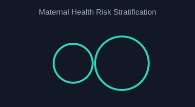

My Projects

Jute Leaf Disease Classification
A modular deep learning pipeline comparing 5 CNN backbones with Optuna hyperparameter optimization and triple XAI (Grad-CAM, SHAP, LIME) for interpretable disease detection.
View More / Details
Maternal Health Risk Stratification
An ML + XAI system to stratify maternal health risk using accessible vitals, designed as a supportive screening tool rather than a diagnostic replacement.
View More / Details